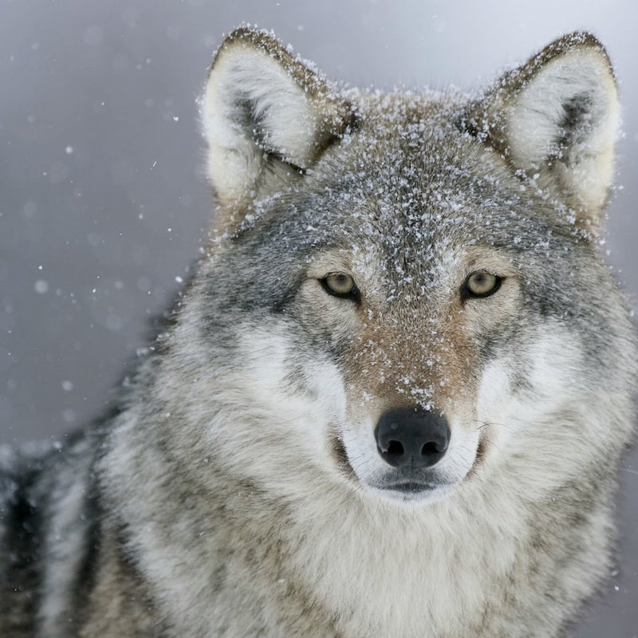

The Wolf

There are two types of wolves recognized, the gray wolf and the red wolf.
These animals tend to live in a pack, who serve as their family and
protectors. Wolves are carnivorous and commonly feed on deer, moose and
bison. They are great hunters and can be as fast as 38 miles per hour.
Fun Facts
They are the largest member of the dog family.
A single wolf can eat up to 40 pounds of meat in one sitting.
The alphas are usually the caretakers of the pack, they play the role of
mother and father.
via GIPHY